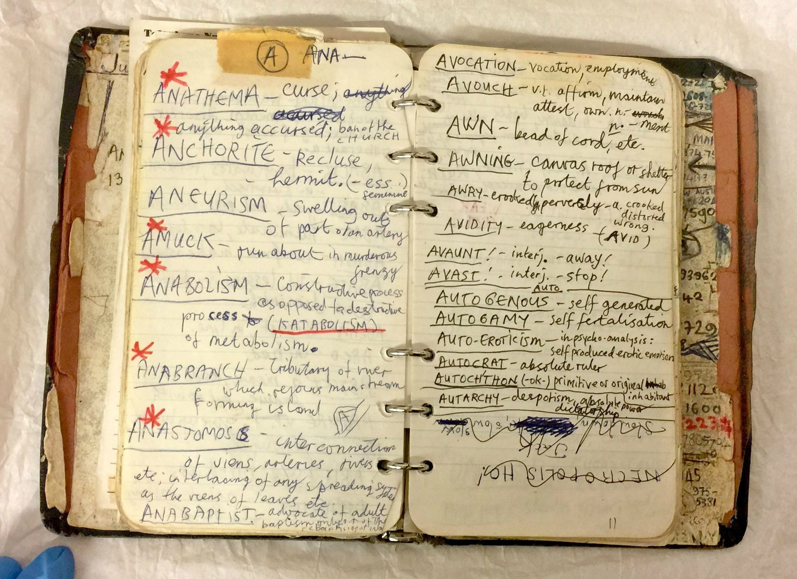

Book of Words
Info
Nick Cave of the band Nick Cave and the Bad Seeds kept a handwritten book of words in which he wrote down words he wanted to remember. Some photos of the book are available online to view, here is one of them:

I have always wanted to keep my own book of words, so this is me starting one I guess. Not much here yet but will build on it. Collected below will be words (And some phrases) I like, find interesting, have meaning or I might include them for some other reason. I may even use different fonts just to give the words some personality. We'll see how that goes.
I'm including any word I like. Not all of them may appear in the dictionary.
Lexicon
A-K
Bimble
to walk at a leisurely pace
Clowder
cluster of cats
Dendrophile
someone who loves trees
Frondescence
the unfurling of leaves
Grotesquerie
grotesque things collectively
Incandescent
emitting light, full of emotion
L-Z
Librocubicularist
someone who reads in bed
Lubberwort
16th Century, meaning: lazy, stupid person
Mellifluous
a pleasing sweet sound
Peiskos
Norwegian, meaning: the feeling of the coziness of an indoor fireplace
Petrichor
smell of rain when it falls on dry soil
Snuggery
a cosy or comfy place such as a den or small room
Thalassophile
someone who loves the sea
Tickeld Pink
idiom, meaning: very pleased
Wayfarer
Person who travels on foot